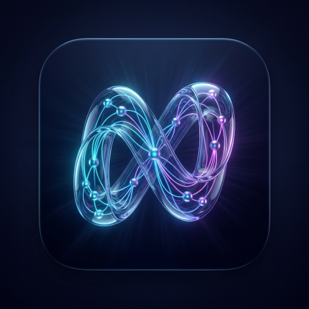

Keine unhandlichen Spezialgeräte für Tausende Euro mehr. Nodus verbindet deinen USB-C OTG Netzwerkadapter direkt mit dem Switch und analysiert Layer-2 Pakete mit lokaler Gemini Nano KI in Echtzeit.
Erfasst und analysiert alle relevanten Layer-2 Pakete (LLDP, CDP, DHCP, 802.1Q VLAN Tags) direkt über deinen USB-C Netzwerkadapter ohne Root-Rechte mit maximaler Performance.
Erzeugt konfigurierbare Traffic-Burst Paket-Salven zur physischen Identifikation von Switch-Ports im Serverraum. Lässt die Port-LED am Switch im Wunschtakt blinken.
Zeigt sofort Switch-Name, Port-ID, VLAN-ID, Management IP, Duplex-Modus und Capabilities des angeschlossenen Netzwerk-Switches an.
Integrierter iPerf3 Client für Durchsatzmessungen (TCP/UDP), Latenz-Analysen, Ping, DNS-Auflösung, Subnet Scanner und TCP Port Scanner.
Zeichnet den eingehenden Datenverkehr im nativen Wireshark PCAP-Format auf. Perfekt für spätere Tiefenanalysen und Paket-Exporte.
Generiert mit einem Klick interaktive, responsive HTML-Messberichte inklusive Standorteingabe, Messdaten und Prüfer-Signatur zum direkten Teilen und Versenden.
Auf einen Blick: Warum teure Spezialgeräte und Standard-Store-Apps ausgedient haben.
| Feature / Kriterium | Standard-Apps (Play Store) |
Teure Hardware-Tester (200 € – 1.500 €) |
NODUS Layer-2 Engine |
|---|---|---|---|
| Benötigte Hardware | USB-LAN-Adapter | Proprietäres Spezial-Gerät / Dongle | Handelsüblicher USB-C LAN-Adapter (~15 €) |
| Root-Rechte erforderlich? | Nein | Nein | Nein |
| Layer 2 Analyse (LLDP / CDP) | |||
| VLAN-Erkennung (802.1Q) | |||
| Wireshark-PCAP-Mitschnitt | |||
| Port-Blinker (Switch-LED) | |||
| iPerf3 & PDF-Messberichte | Integriert | ||
| Infrastruktur-Kosten | 0 € – 10 € | 200 € – 1.500 €+ | Nur App + günstiger Adapter |
Standard-Apps aus dem Store arbeiten rein auf Layer 3 und 4 (IP-Adressen, Pings, einfache Portscans). Sie können keine Schicht-2-Informationen des Switches auslesen. NODUS geht eine Ebene tiefer: Du erhältst direkte Schicht-2-Informationen wie LLDP/CDP-Nachrichten, Trunk-VLAN-Tags und Paket-Mitschnitte (PCAP) – genau die Daten, für die man bisher teure Spezialhardware brauchte.
Nein. NODUS funktioniert auf ganz normalen Android-Smartphones ohne Root-Zustand. Anstelle eines proprietären Hardware-Dongles für mehrere hundert Euro nutzt NODUS einen handelsüblichen USB-C-auf-Ethernet-Adapter.
NODUS funktioniert mit praktisch allen handelsüblichen USB-C-auf-Gigabit-Ethernet-Adaptern, die überall im Handel erhältlich sind. Du benötigst keine teure Spezial-Hardware – ein ganz gewöhnlicher USB-LAN-Adapter genügt.
Für 90 % der täglichen Aufgaben im Service, bei der Fehlersuche und der Inbetriebnahme (Welcher Switch-Port ist das? Welches VLAN liegt an? Läuft DHCP? Passt der Durchsatz via iPerf3?): Ja. Du hast dein Testwerkzeug ab sofort immer in der Hosentasche, ohne schwere Gerätekoffer oder leere Spezial-Akkus.
Lade die Demo-App direkt auf dein Android-Smartphone und starte deine Netzwerkanalyse.